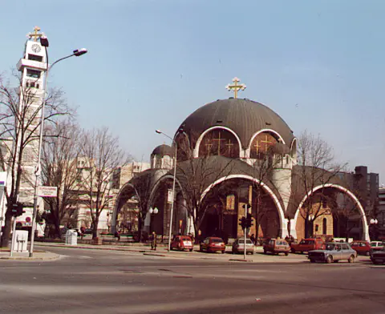

Картички
21 теми от историята на Скопие: сгради, улици, мостове, пазари, наводнения и земетресението, в 697 стари картички и снимки с описание.
 Акведукт4 картички
Акведукт4 картички Кале30 картички
Кале30 картички Мостове60 картички
Мостове60 картички Кей58 картички
Кей58 картички Площад46 картички
Площад46 картички Сгради66 картички
Сгради66 картички Християнски храмове19 картички
Християнски храмове19 картички Мюсюлмански сгради33 картички
Мюсюлмански сгради33 картички Офицерски дом29 картички
Офицерски дом29 картички Театър28 картички
Театър28 картички Железопътна гара13 картички
Железопътна гара13 картички Училища36 картички
Училища36 картички Паркове12 картички
Паркове12 картички Пазари18 картички
Пазари18 картички Улици38 картички
Улици38 картички Панорама I60 картички
Панорама I60 картички Панорама II30 картички
Панорама II30 картички Колажи55 картички
Колажи55 картички Наводнения9 картички
Наводнения9 картички Земетресение27 картички
Земетресение27 картички
Скопие 200026 картички